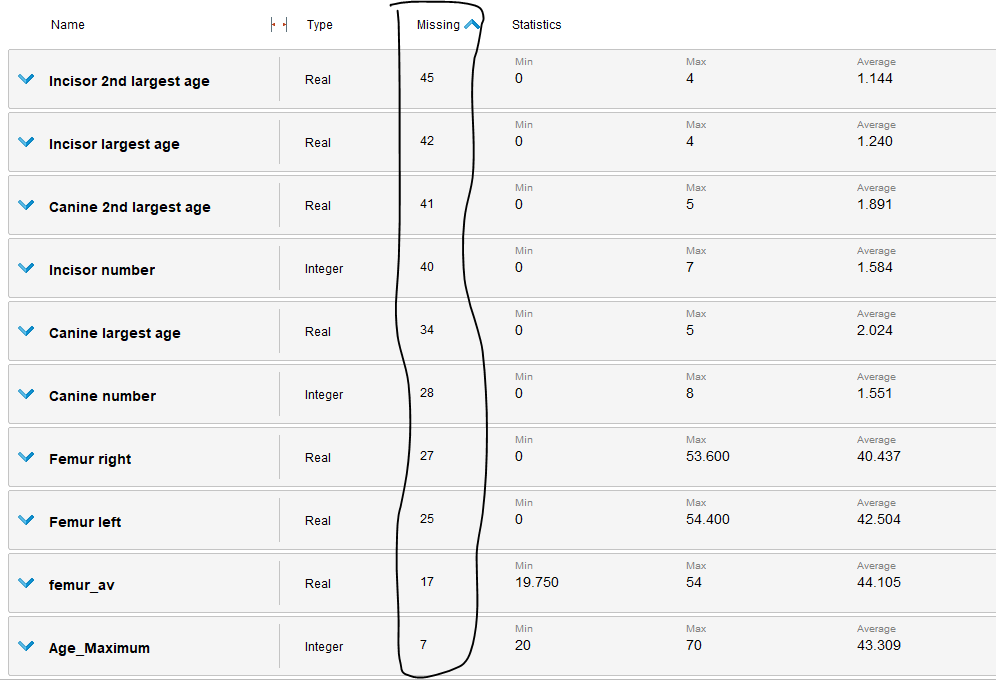

Prediction from skeletal remains
Data used data set bone remains
The data set used contains information on remains fossils found in Gråbrødre (Franciscan
monastery) in the city of Ribe in southwest Jutland,
Denmark.
Data from 114 adults (67 men and 47 women) were used from the excavated bodies.
The objective is to predict the height of the individual from skeletal remains.
This is undoubtedly a very important task at an archaeological and historical level since it
helps to understand features of the human beings that inhabited the earth thousands of years ago.
With this information many studies can be made, related with the characteristics of these people,
their habits and customs to study the history of the evolution of human beings.
The forensic theoretical framework affirms the relationship between the size of the femur and
the height of the person depending on sex, and other variables.
On the other hand, terms such as hyperplasia are used, which is the incomplete development of
the enamel that occurs before the tooth erupts in the mouth, this feature doesn't change once
formed.
According to ADBOU, hyperplasia can be an indicator of growth problems and / or poor health.
Some are directly related to health problems while others may be product of a temporary illness
that occurred at the time of childhood in which the person was developing tooth enamel.
It is important to consider that any illness suffered during the
childhood can cause a development in growth less than expected.
On the other hand, to measure the height of the found skeletons, it must be done in a supine
position, being extended and only to those that are preserved and have not been moved.
It is measured from the furthest cranial point of the body and the farthest point of the talus (ankle bone).
Age and sex are estimated by proven forensic procedures described in various archaeological
studies.
The use of the method requires basic training in osteology and is based on both observations
made from skeletons of reference samples (skeletal material where the age of death
and sex is known) and statistical methods (logistic regression analysis and theorem of
Bayes). They consider bones as: Limbus acetabula, Proximal Tibia, Femur linea aspera, Femur
fossa trochanteria, and Femur caput fovea. Age is determined with a higher and
lower margin.
Similarly, sex is classified using an ordinal variable of 7 categories ranging from
clearly masculine, predominantly masculine, slightly masculine, and undefined to distinctly
female, considering skull, pelvis and postcranial skeleton.
The size of the teeth is considered when estimating age, the four incisors form
a group, the two canines form other group and the four deciduous molars form other group.
A group only has to be represented by a single tooth to get a score
positive.
After a brief understanding of the study area addressed by the problem, a
description of the variables surveyed:
The id fulfills a unique identification function of the collected data.
Location: in all cases is Ribe, except for one case that has in the variable
location the grave number, a registration error.
Site_Number: The site number is the record of the authorities of the
excavation.
Age_minumum: is the estimated minimum age
Age_maximum: is the estimated maximum age
Sex: is the estimate of sex according to the aforementioned data
Grave Number: Grave numbering is often not consistent since
they dug many graves in independent excavations the numbers do not keep a strict
relationship.
Canine number: Number of visible hyperplasias in the canine.
Canine largest age: age at which the largest hyperplasia of the canine
formed.
Canine 2nd largest age: age when the 2nd largest hyperplasia
of the canine was formed.
Incisor number: Number of visible hyperplasias in the incisor.
Incisor largest age: age at which the largest hyperplasia of the
incisor was formed.
Incisor 2nd largest age: age when the 2nd largest hyperplasia of the incisor was formed.
Height in grave: measured height of the skeleton (dependent variable)
Notes of anomalies in the vertebrae: any observations on anomalies
observed that may influence the measured height. If there are anomalies that may affect the
height the data should not be taken into account.
Left femur: measured in cm of the left femur
Right femur: measured in cm of the right femur
Abnormalities Femur: Notes on abnormalities of the femur.
Notes: any note to consider, any illness suffered.
Date: data record date
Signature: Signature of the researcher who collected the data
Teeth scorable: Indicates whether the teeth are scorable or not. It is
considered a Non-scoring tooth when more than one third of the tooth is worn.
Hyperplasia: Must be checked if hyperplasia is scored. Hyperplasias are
they score on the upper left canine and the left incisor.
Attribute analysis:
Attributes considered equal for all instances will not be considered because they are
irrelevant to the model, for example location and site_number are the same for the whole model,
grave_number clarifies in the reference documentation that it does not have
any significance by how the data were collected, therefore, it also does not seem to be useful for
the prediction of the model.
The notes will be considered qualitatively when proceeding to discard the data if it does not
meet the conditions to be analyzed but natural language processing is beyond the scope of this analysis.
In turn, date and signature are not considered relevant for the present analysis since it is irrelevant information
for the model. In the case of the signature and the date is all of the same month of 2008 so it
is not expect significant differences.
Below is a summary of statistics for the discarded attributes:
To avoid correlated variables in the femur size model (left and right) as
well as age, it is considered relevant to average the age (minimum and maximum) and the size of the femur
(left and right).
Sex is recoded as a nominal variable to male: 0 and female: 1 to be able to work
with models that take data with numeric values.
Missing data for sex and for average femur size are filtered, preserving for
those record that have only a femur size value and an age value that value as
representative of the average.
The data for which the tooth is "scoring" was also filtered, since it does not make sense to analyze a tooth that cannot be analyzed because it is very deteriorated
and will not have information on hyperplasia and if it did, it would not be reliable.
Observing the summary statistics after filtering the discarded variables:

A large amount of missing is observed in the variables number of hyperplasia in canine and in
incisor as well as the age of the longest and the second longest canines and incisors.
The best option is to choose to discard them since imputing measurement data would
be risky. Let's look at the weight of the attributes in the model
using feature selection algorithms:
Evolutionary algorithm

Forward selection algorithm

PCA algorithm
PCA has a diffuse significant first component, the 1st component explains 44.7% of the
variance and the second an accumulated of 63.4%, as shown below with the table of eigenvalues:

Backward elimination algorithm
From the analysis of all the algorithms we can affirm that sex is a variable that is repeated as
important in all the algorithms, as well as average size of the femur and hyperplasia.
The number of visible hyperplasia in the canine and the age at which the most hyperplasia formed
big canine too prove to be variables that are repeated in both models.
After carrying out several tests, it is observed that the performance of the model decreases
when including visible hyperplasias in the canine and the same happens when including age in which the largest
hyperplasia of the canine formed.
Therefore, considering the previous analysis, the attributes selected are: Average age, size
average femur and sex.
The algorithms of linear regression, decision tree and random forest are tested, obtaining the
decision tree the best performance with 89.1% when using a maximum tree depth of 4 and a
division criterion of least squares given that the output variable is numeric.
Performance Decision Tree

Performance Linear Regression Tree
Performance Tree of random forest

Therefore we can affirm that 88.1% of the person's height is explained by the variation
of the average age estimated by researchers, Sex, and Average femur size.
Finally, the model is run with decision trees, trying to measure the errors of the previously
divided test data set, obtaining descriptive statistics of the error:
An average of 0.379 with a deviation of 4.819 which is not less.
As a final result of the model, the following decision tree with depth 4: